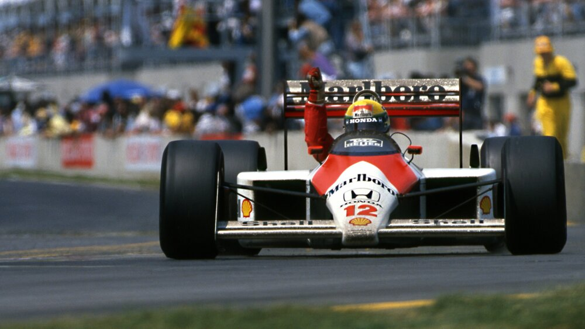

O Instituto Ayrton Senna é uma organização sem fins lucrativos que há mais de 25 anos trabalha para ampliar as oportunidades de crianças e jovens por meio da educação de qualidade. Fundado em memória do piloto Ayrton Senna, o Instituto atua em parceria com redes públicas de ensino em todo o Brasil, desenvolvendo políticas educacionais, formações para educadores e soluções inovadoras com base em evidências. Com a missão de transformar o Brasil por meio da educação, o Instituto já impactou a vida de milhões de estudantes e professores. Acreditamos que cada criança tem o direito de se desenvolver plenamente e construir um futuro com mais possibilidades.
Instituto Ayrton Senna
"Seja você quem for, seja qual for a posição social que você tenha na vida, a mais alta ou a mais baixa, tenha sempre como meta muita força, muita determinação e sempre faça tudo com muito amor e com muita fé em Deus, que um dia você chega lá. De alguma maneira você chega lá."
Ayrton senna
Momentos importantes da carreira
Galeria Ayrton Senna


